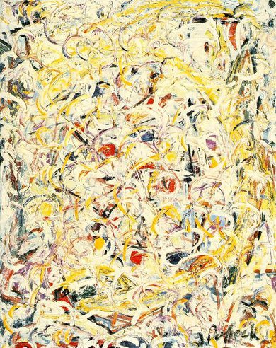

Jackson Pollock,1912 – 1956,Abstract Expressionism,American,"Paul Jackson Pollock (; January 28, 1912 – August 11, 1956) was an American painter and a major figure in the abstract expressionist movement.",http://en.wikipedia.org/wiki/Jackson_Pollock,24
